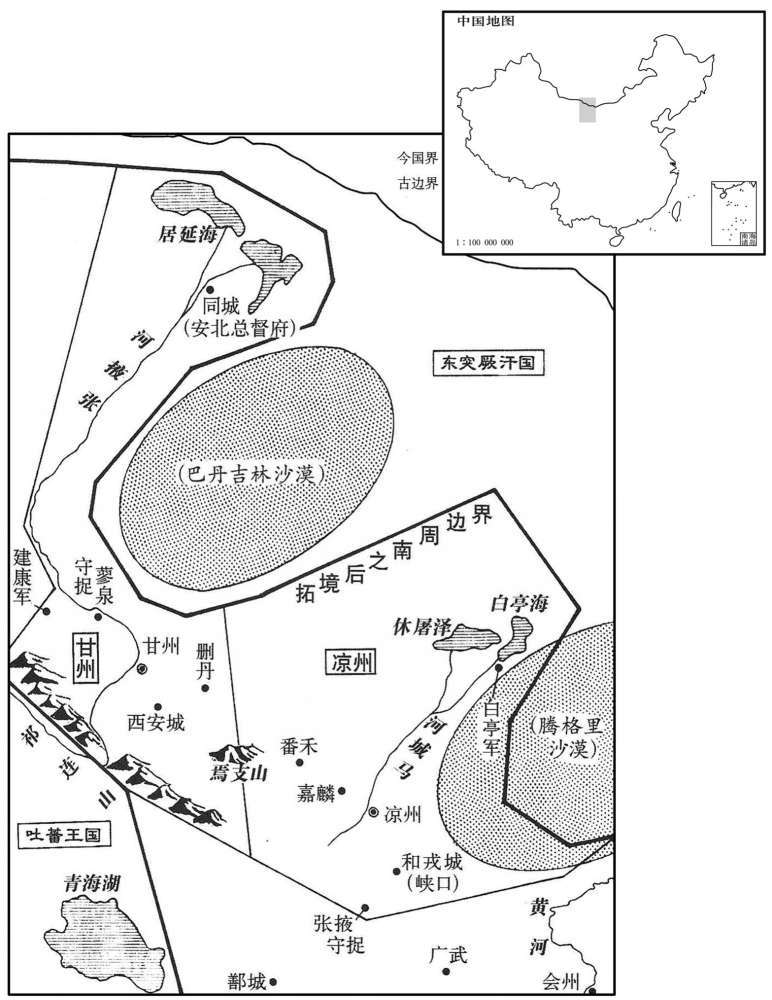

公元701年资治通鉴：本年记事、原文与白话对照
按原书编年位置阅读；追叙和史论不等于本年发生的事件。白话采用所据译本，缺译不以生成译文补齐。
卷207 · 本年记事
公元701年 · 唐则天顺圣皇后长安元年
长安元年〔（辛丑、七〇一）是年十月始改元长安。〕
本年事件索引（现代整理）

本年形势与背景参考图
春，正月，丁丑，以成州言佛迹见，〔见，贤遍翻。〕改元大足。〔自此以后，是大足元年。考异曰：朝野佥载云：「司刑寺囚三百余人，秋分后无计可作，乃于圆狱外罗墙角边作圣人迹五尺，至夜半，三百人一时大叫。内使推问，云『昨夜有一圣人见，身长三丈，面作金色，云：「汝等并冤枉，不须怕惧，天子万年，即有恩赦放汝」』把火照之，见有伪迹，即大赦天下，改为大足元年。识者相谓曰：『武家理，天下足也。』」按改元在替，不在秋；又无赦。今天取。〕
春季，正月，丁丑（初三），由于成州说发现了佛的足迹的缘故，武则天改年号为大足。
二月，己酉，以鸾台侍郎柏人李怀远同不章事。〔鸾台，门下。柏人县，自满以来属巨鹿郡；巨鹿，唐邢州，天宝改曰尧山县。〕
二月，己酉（初六），武则天任命鸾台侍郎柏人县人李怀远为同平章事。
三月，凤阁侍郎、同平章事张锡坐知赞漏泄禁中语，脏满数万，当斩，临刑释之，流循州。〔旧志：循州至东都四千八百里。选，须绢翻。〕时苏味道亦坐事与锡俱下司刑狱，〔下，遐稼翻。〕锡乘马，意气自若，舍于三品院，〔先是，制狱既繁，司刑寺别置三品院以处三品以上官之下狱者。〕帷屏食饮，无异不居。味道步至系所，席地而卧，蔬食而已。太后闻之，赦味道，复其位。
三月，凤阁侍郎、同平章事张锡因主持铨选时泄漏宫中语以及非法获取财物达数万之多而获罪，应当斩首，等到即将行刑之际又被免除死罪，流放循州。当时苏味道也因事犯罪与张锡一起入司刑寺监狱。在去监狱的路上，张锡骑在马上，神态自若，直接住进专门为犯罪的三品以上官员准备的三品院中，帷帐的张设和饮食的排场，与平时完全相同。苏味道则是徒步走到羁押场所，夜晚睡在冰凉的地板上，每顿只吃蔬菜。武则天听说了这件事之后，下令赦免苏味道的罪，并恢复了他的原任职务。
是月，大雪，苏味道以为瑞，帅百官入贺。〔帅，读曰率。〕殿中侍御史王求礼止之曰：「三月雪为瑞雪，腊月雷为瑞雷乎﹖」味道不从。既入，求礼独不贺，进言曰：今阳和布气草木发荣，而寒雪为灾，岂得诬以为瑞！贺者皆谄谀之士地。」太后为之罢朝。〔，为，干伪翻；下问。考异曰：统纪在延载元年，佥载在久视二年。统纪云「太拾遗」，佥载云「侍御史」。御史台记云「殿中侍御史」。统纪云「味道无以对」。旧传云「求礼止之，味道不从」。今年从佥载，官从台记，事则参取诸书。〕
就在这个月，突然降下大雪，苏味道认为这是吉兆，便带领文武百官入朝祝贺。殿中侍御史王求礼上前制止，他说：“如果说阳春三月下的雪是瑞雪，那么寒冬腊月打雷就应该是瑞雷啦！”苏味道不听劝阻。入朝之后，惟独王求礼不但不称贺，反而向武则天进言道：“现在正是春天温暖的气息散发、草木生长开花的季节，而突然降下大雪会成为灾害，怎么能歪曲说这场大雪象征着吉兆呢？称贺的人都是阿谀奉承之辈。”武则天因此而罢朝。
时又有献三足牛者，宰相复贺。〔复扶又翻。〕求礼扬言曰：〔孔安国曰：大言而疾曰扬。扬，余章翻。〕「凡物反常皆为妖。〔妖，于乔翻。〕此鼎足非其人，〔三公鼎足承君。〕政教不行之象也。」太后为之愀然。〔愀，七小翻。〕
这时又有人来献一头三条腿的牛，宰相们又一次入朝称贺。王求礼大声疾呼：“反常的东西都算妖，出现三足牛的现象，是三公没有合适的人选以及国家的刑赏教化没有得到实行的象征。”武则天听完之后愁容满面。
夏，五月，乙亥，太后幸三阳宫。
夏季，五月，乙亥（初三），武则天住进了三阳宫。
以魏元忠为灵武道行军大总管，以备突厥。
武则天任命魏元忠为灵武道行军大总管，目的是为了防备突厥的侵扰。
天官侍郎盐官顾琮同平章事。〔盐官县，满属吴郡，吴属嘉兴，置海昌都尉；梁、陈属钱塘郡，隋属余杭郡，唐属杭州。〕
天官侍郎盐官县人顾琮任同平章事。
六月，庚申，以夏官尚书李迥秀同平章事。
六月，庚申（十九日），武则天任命夏官尚书李迥秀为同平章事。
迥秀性至孝，其母本微贱，妻崔氏常叱媵婢，母闻之不悦，迥秀即寺出之。〔迥户顷翻。媵，以证翻。〕或曰：「贤室虽不避嫌疑，然过非七出，〔律，妻犯七出者弃之：一无子二淫佚，三不事舅姑，四口舌，五窃盗，六勡忌，七恶疾。〕何遽如是﹖」迥秀曰：「娶妻本以养亲；今乃违忤颜色，〔养，余亮翻。忤，五故翻。〕安敢留也！」竟出之。
李迥秀生性极为孝顺，他的母亲原来出身卑微低贱，李迥秀的妻子崔氏经常大声呵斥陪嫁使女，他母亲听到后感到不快，迥秀便立即将崔氏休弃。有人对他说：“您的妻子虽然不善避开嫌疑，但她的过失不属于休妻七条，为什么您匆忙把她休弃了呢？”李迥秀回答说：“娶妻的目的本来就是为了侍养双亲，现在她却惹得母亲不高兴，我哪里还敢把她留在家中呢！”终于还是将崔氏休弃了。
秋，七月，甲戌，太后还宫。
秋季，七月，甲戌（初三），武则天回到宫中。
甲申，李怀远罢为秋官尚书。
甲申（十三日），李怀远被罢免为秋官尚书。
八月，突厥默啜寇边，命安北大都护相王为大兵道元帅，〔相，悉亮翻。帅，所类翻。〕统诸军击之，未行而虏退。
八月，突厥阿史那默啜进犯边境，武则天派安北大都护相王李旦任天兵道元帅，统率众路大军迎击，还没有等到发兵，突厥即已退军。
丙寅，武邑人苏安恒上疏曰：「陛下钦先圣之顾托，受嗣子之推让，〔先圣，谓大帝。嗣子，谓皇嗣相王。恒，户登翻。上，时掌翻。疏，所去翻；下同。推，吐雷翻。〕敬天顺人，二十年矣。岂不闻帝舜褰裳，周公复辟！舜之于禹，事祗族亲；旦与成王，不离叔父。〔史记，舜，黄帝之八代孙，禹，黄帝之玄孙，故云族亲。周公，武王之弟，成王之叔父；旦，其名也。离，力智翻。〕族亲何如子之爱，叔父何如母之恩﹖今太子孝敬是崇，春秋既壮，若使统临宸极，何异陛下之身！陛下年德既尊，宝位将倦，机务烦重，浩荡心神，何不禅位东宫，自怡圣体！自昔理天下者，不见二姓而俱王也。当今梁、定、河内、建昌诸王，〔武三思封梁王，攸暨封定王，懿宗封河内王，攸宁封建昌王。〕承陛下之荫覆，〔覆敷又翻。〕并得封王；臣谓千秋万岁之后，于事非便，臣请黜为公侯，任以闲简。臣又闻陛下有二十余孙，今无尺寸之封，此非长久之计也；臣请分土而王之，择立师传，教其孝敬之道，以夹辅周室，屏藩皇家，斯为美矣。」〔屏，卑郢翻。〕疏奏，太后召见，〔见贤遍翻。〕赐食，慰谕而遗之。
丙寅（初六），武邑人苏安恒上疏道：“陛下钦仰先帝的临终嘱托，接受太子的辞让，上敬天意，下顺民心，至今已有二十年了。难道陛下没有听说过帝舜撩起衣裳、离开帝位，和周公归政于成王的事情吗！帝舜和大禹之间，仅仅是同族亲属的关系；周公旦与周成王之间，也不过是叔侄关系。同族亲属之间的感情哪里能与亲生儿子对母亲的敬爱相比，叔父对于侄子又哪里能够比得上母亲对儿子的情分？现在太子尊崇孝亲敬上之道，又已到壮年，如果让他即皇帝位，治理国家，与陛下自居帝位又能有什么区别！陛下的年纪与德望都很高了，身居帝位将感到疲倦，需要处理的事务十分烦重，会使您心神耗竭，无从思虑，陛下为什么不将帝位禅让给太子，以追求御体的安康愉悦呢！自古以来治理天下，不曾见过两个不同姓氏的家族成员同时被封为王的，而现在梁王武三思、定王武攸暨、河内王武懿宗、建昌王武攸宁等，承蒙陛下的荫庇，都被封为王。臣以为这件事在陛下百年之后，将会非常不利，因此我请求陛下将他们降为公侯，并任命他们担任清闲的职务。此外，我还听说陛下有二十多个孙子，至今仍然没有得到任何封号，这也同样不是长久之计，所以臣请求陛下把他们分封为王，为他们选择师傅，以教导他们孝亲敬上之道，使他们能辅佐大周皇室，成为国家的屏障，这就完美无缺了。”奏疏进呈后，武则天召见了他，并赐给酒饭，用好话慰解之后送他出宫。
太后替秋高，政事多委张易之兄弟；邵王重润与其妹永泰郡主、主伲魏王武延基窃议其事。〔重，直龙翻。〕易之诉于太后，九月，壬申太后皆逼令自杀。〔考异曰：重润传云：「重润为人席构，与其妹永泰郡主伲魏王武延基等窃议张易之兄弟何得恣入宫中；则天令杖杀。」今从实录。〕延基，承嗣之子。〔承嗣太后之侄。〕
武则天年事已高，朝廷政事多让张易之兄弟去处理；邵王李重润和他的妹妹永泰郡主及永泰郡主的丈夫魏王武延基在私下议论此事。张易之把这件事告诉了武则天。九月，壬申（初三），武则天副迫邵王李重润、永泰郡主及魏王武延基自杀。武延基，是武则天的侄子武承嗣之子。
丙申，以相王知左、右羽林卫大将军事。
丙申（二十七日），武则天任命相王李旦主持左、右羽林卫大将军的事务。
冬，十月，壬寅，太后西入关，辛酉，至京师；赦天下，改元。〔改元长安。〕
冬季，十月，壬寅（初三），武则天西行入潼关，辛酉（二十二日），到达京城长安；下诏赦免天下罪犯，改年号为长安。
十一月，戊寅，改含元宫为大明宫。〔长安东内本日大明宫，高宗龙朔三年曰蓬莱宫，咸亨曰含元宫，今复旧名。〕
十一月，戊寅（初十），武则天把含元宫改名为大明宫。
天官侍郎安平崔玄暐，〔安平县，汉属涿郡，后汉属安平国，后魏属博陵郡，唐属定州。〕性介直，未尝请谒。执政恶之，〔恶，乌路翻。〕改文昌左丞。月余，太后谓玄暐曰：「自卿改官以来，闻令史设齐自庆。〔唐吏部四司令史八十人。〕此欲盛为奸贪耳；伐还卿旧任。」乃复拜天官侍郎，〔复，扶又翻，又如字。〕仍赐彩七十段。〔唐制，凡赐十段，其率绢三匹，布三端，绵四屯；若杂彩十段，则丝布二匹，紬二匹，绫二匹，缦四匹。〕
天官侍郎安平县人崔玄，性情耿直，从来不向权贵请托求见。这些人讨厌他，于是让他改任文昌左丞。一个多月之后，武则天对崔玄说：“我听说自从你改任文昌左丞之后，你原来属下的令史等官吏纷纷准备斋食施给僧尼以示庆贺，看起来他们是想大干贪赃枉法的事呀！所以现在我让你官复原职。”于是重新任命崔玄为天官侍郎，还赏赐他彩色丝织物七十段。
以主客郎中郭元振为凉州都督、陇右诸军大使。〔唐主客郎掌二王后及诸蕃朝聘之事，属礼部。使疏吏翻。〕
武则天任命主客郎中郭元振为凉州都督、陇右诸军大使。
先是，凉州南北境不过四百余里，〔先，悉荐翻。〕突厥、吐蕃频岁奄至城下，百姓苦之。元振始于南境硖口置和戎城，北境碛中置白亭军，〔杜佑曰：白亭守捉在凉州城西北五百里。碛，七迹翻。〕控其冲要，拓州境千五百里，自是寇不复至城下。〔复，扶又翻。〕元振又令甘州刺史李汉通开置屯田，尽水陆之利。旧凉州粟麦斛至数千，及汉通收率之后，〔收率者，收民而率其耕。〕一缣籴数十斛，积军粮支数十年。元振善于抚御，在凉州五年，夷、夏畏蓦，令行禁止，牛羊被野，〔夏，户雅翻。被，皮义翻。〕路不拾遗。
在此之前，凉州全境南北不过四百多里，突厥和吐蕃的兵马连年都经常突然出现在州城下，老百姓为此而受苦。郭元振开始在凉州南部边境的硖口修筑和戎城，在北部边境的沙漠中设置白亭军，控制了凉州的交通要道，将凉州边境拓展了一千五百里，从此突厥、吐蕃的兵马无法再前来州城侵扰。郭元振又让甘州刺史李汉通实行屯田政策，充分利用当地的河流土地从事农业生产。以往凉州地区的谷子和小麦每斛值数千钱，到了李汉通募民垦种土地之后，一匹细绢就可以换到数十斛粮，积存在军粮可供数十年之用。郭元振擅长安抚统治百姓，在凉州任职的五年中，深受当地各族百姓敬畏，真正做到了令行禁止，所畜养的牛羊漫山遍野，境内路不拾遗。